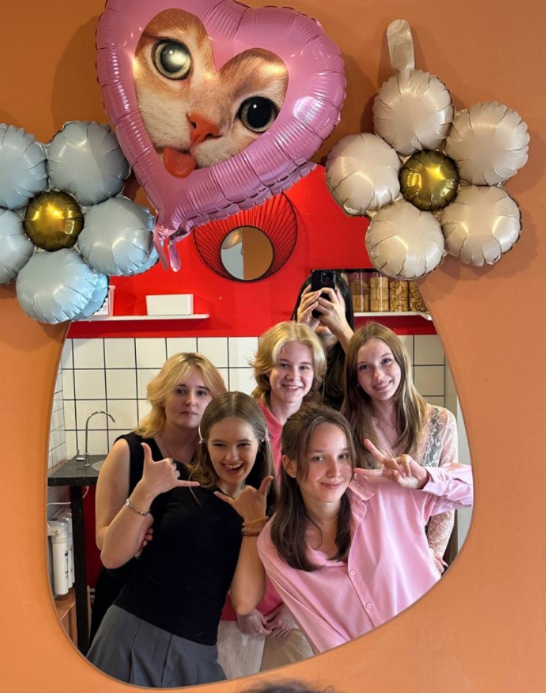
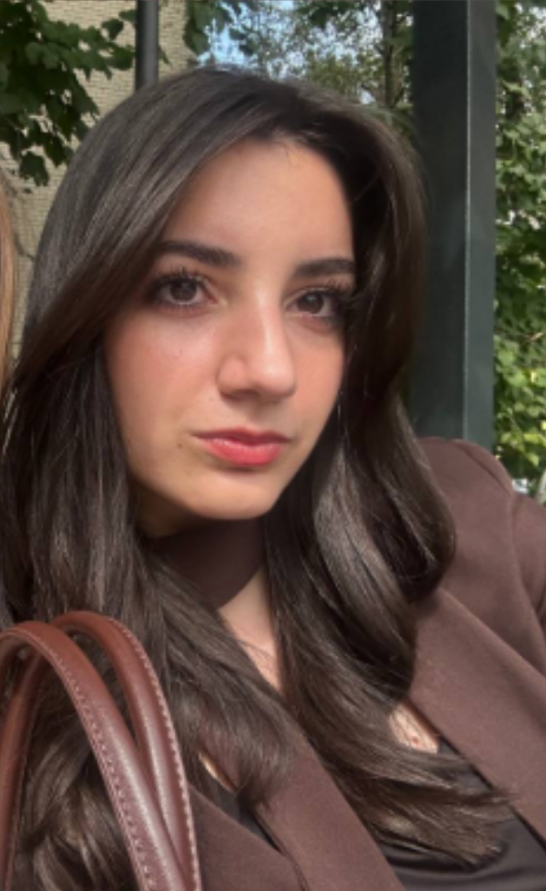
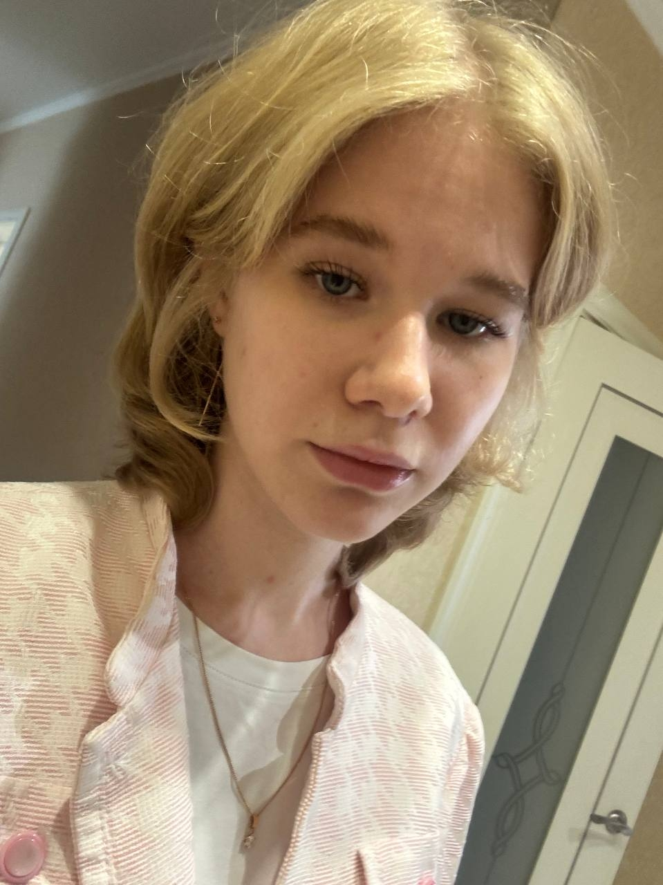
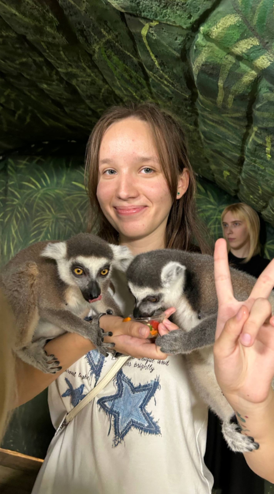
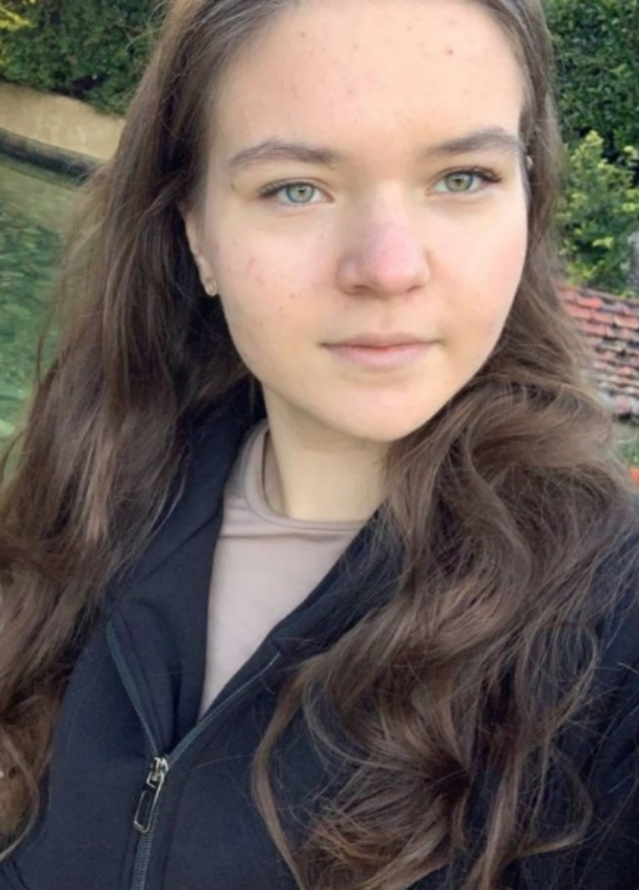
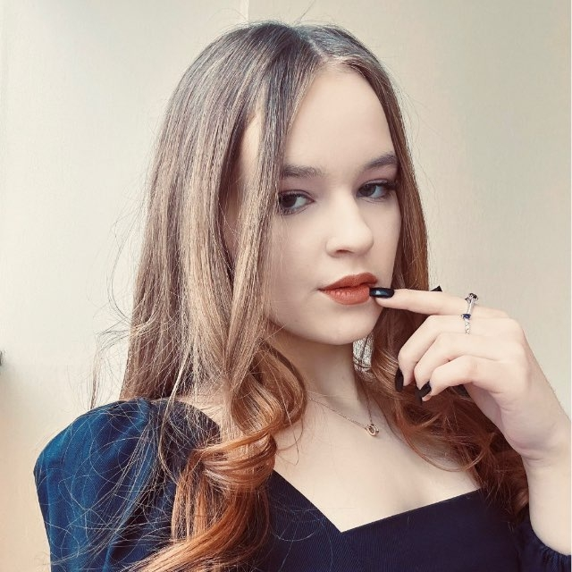
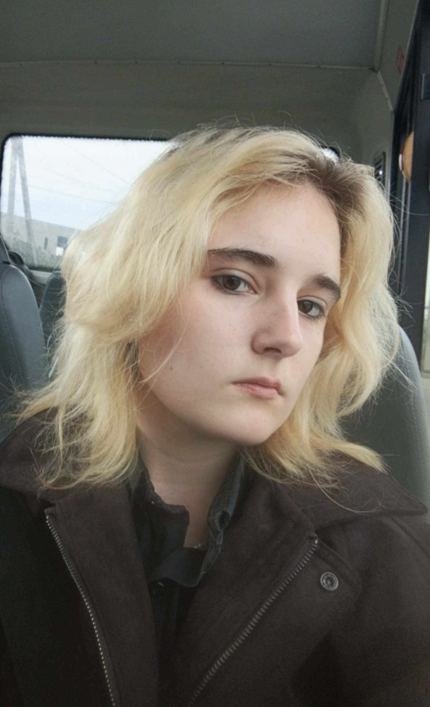

Список друзей

У меня есть несколько замечательных друзей.У каждого из них своии собственные увлечения и хобби, все мы разные, однако сошлись.
-

- Мила
- Интересы: рисование, веб-дизайн, просмотр сериалов
- Мечтает стать специалистом по графическому дизайну
-

- Маша
- Интересы: чтение книг, изучение истории, рисование
- Увлекается сериалом «Рик и Морти» и другими фандомами
-

- Ксюша
- Интересы: косплеи, макияж, чтение корейских графических романов
- Занимается косплеями, выступает на фестивалях
-

- Аня
- Интересы: просмотр сериалов, путешествия, программирование
- Любит узнавать новое
-

- Маша
- Интересы: журналистика, чтение книг по психологии, рисование, вязание
- Любит создавать новое, креативить
-

- Ксюша
- Интересы: медицина, чтение книг, искусство, рисование
- Учится в медицинском, много чем увлекается, всегда есть о чем поговорить
Как мы познакомились
Большинство друзей я получила, учась в разных школах и университете.
С некоторыми мы вместе учимся и сейчас.
- Начальная школакола
- В то время я познакомилась с Милой и Машей.
- Университет
- С другими познакомилась уже в студенческие годы (Аня).